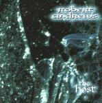

Home Artist links Label link

Robert Andrews - The Host
| Artist: | Robert Andrews |
| Title: | The Host |
| Label: | Cyclops CYCL 112 |
| Length(s): | 53 minutes |
| Year(s) of release: | 2002 |
| Month of review: | [10/2002] |
Sample this album in MP3 or RealAudio
The music
This Andrews album once again contains a number of gently flowing tracks, dominated by guitars, which is no wonder, if you consider Rob is a guitar player. Although there is one surprisingly eclectric track, being the fourteen minute Saboteur, which has some parts I really like, most of the material on this disc is pretty bland. Those who liked his previous work, will probably like this album too. Those who didn't, like me, would probably do best ignoring this album.
© Roberto Lambooy